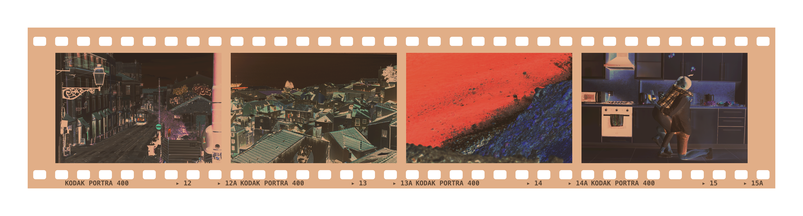
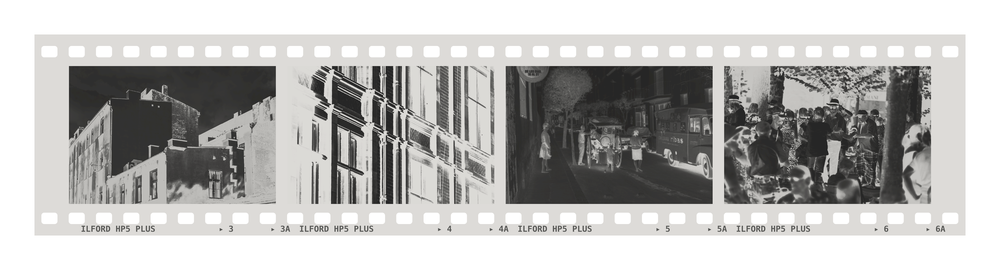

Test negatives for Filmback. Set this screen to full brightness, open Filmback on an iPhone and point it at a strip (or download an image and use Import in the Scan tab). Downloads: colour negative · black & white negative

